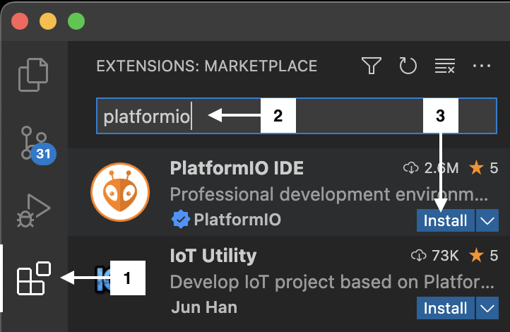
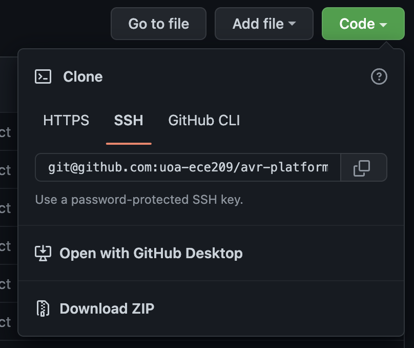
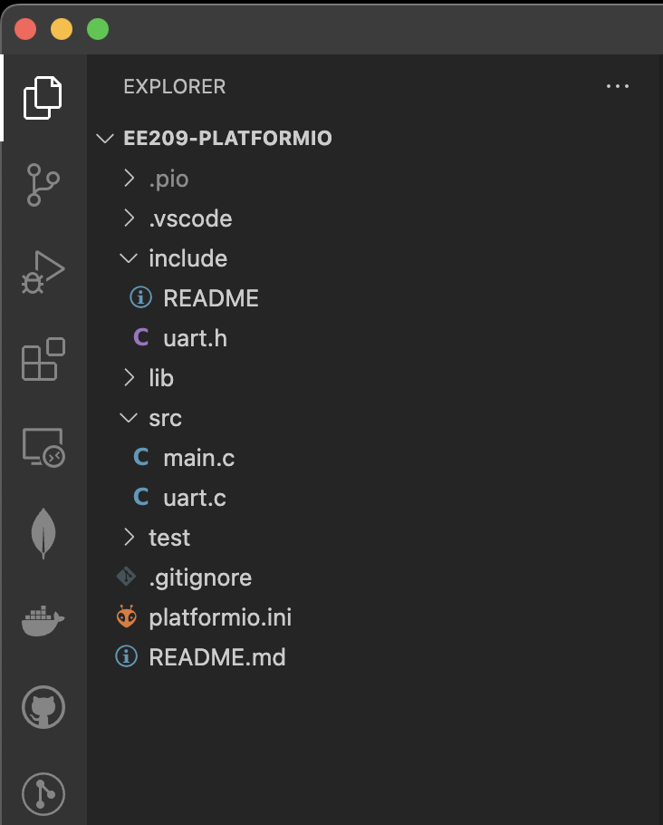
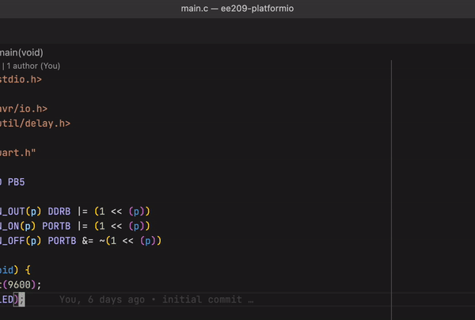
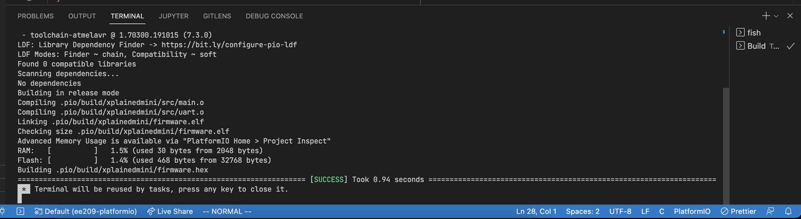
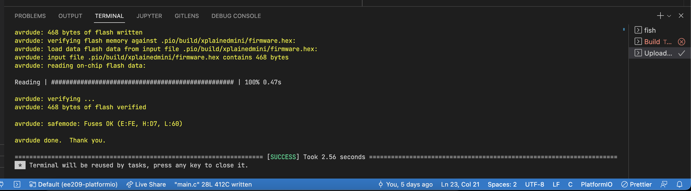
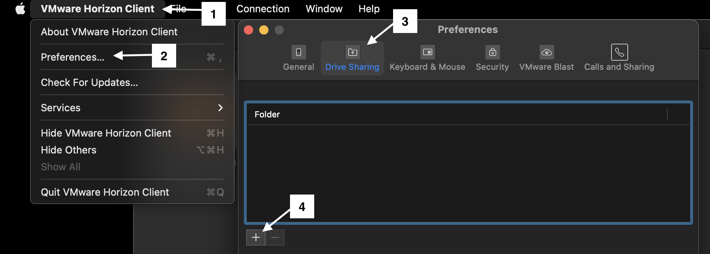
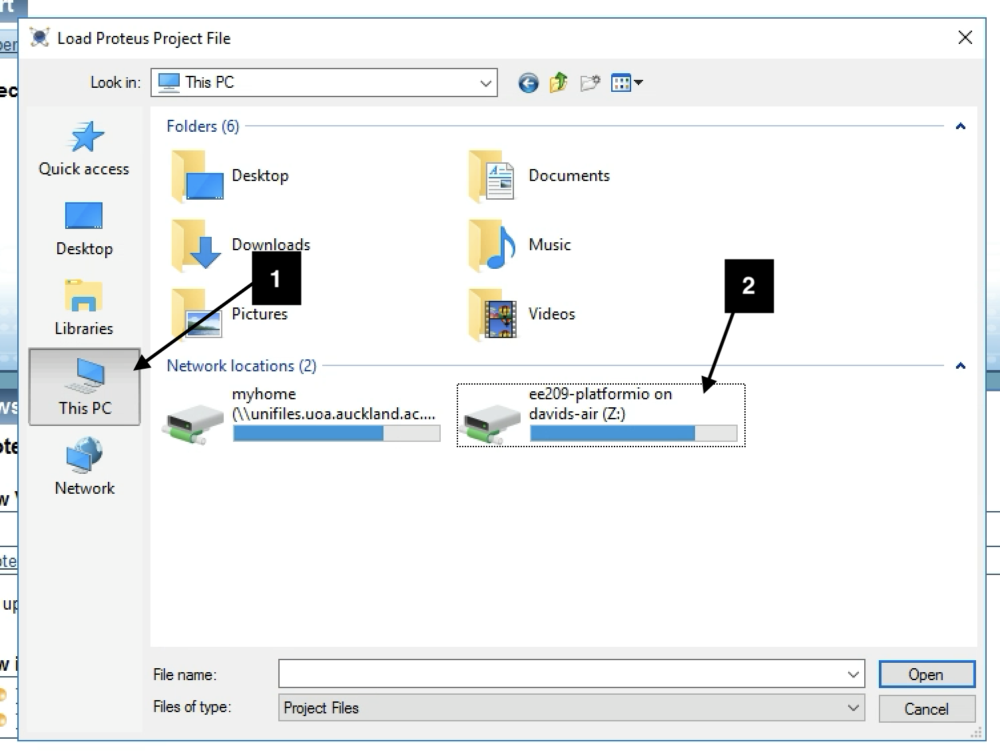
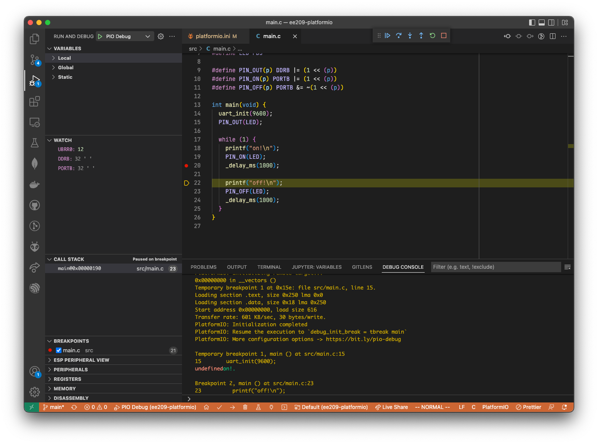

class: title-slide count: false .logo-title[] ## ELECTENG 209 # Analog & Embedded Software Design ### An Introduction to PlatformIO .TitleAuthor[David Cole] --- layout: true name: template_slide .logo-slide[] .footer[[David Cole](https://uoa-ecse.slack.com/team/U03FNJWT55E), Department of Electrical, Computer and Software Engineering (2022)] --- name: S1 # What is PlatformIO? .left-column[ - PlatformIO is a **cross-platform**, cross-architecture platform for microcontroller development - Runs inside Visual Studio Code - Supports Windows, Mac and Linux - Vast microcontroller support, including Atmel AVR - Alternative to Atmel Studio - especially for macOS and Linux users ] .right-column[ .center[<img src="img/PlatformIO.png" width="512px">] ] --- name: S2 # Installation 1. Download and Install [Visual Studio Code](https://code.visualstudio.com/) 2. Install the PlatformIO extension .center[] --- name: S3 # Demo Project .left-column[ - We have provided a demo PlatformIO project for use in ELECTENG 209 this year - [avr-platformio-example](https://github.com/uoa-ece209/avr-platformio-example) - Clone the repository via Git, or download as a zip file if you want to use it as a template. - Open the project in Visual Studio Code (File -> Open Folder) ] .right-column[ .center[] ] --- name: S4 # Project Layout .left-column[ Key files/folders are highlighted here: - <code>include</code> - Put your C header files in this folder (uart.h, adc.h etc.) - <code>src</code> - Put your C source files in this folder (main.c, uart.c, adc.c etc.) - <code>platformio.ini</code> - PlatformIO configuration file - The provided copy will work for the Xplained Mini boards provided to you ] .right-column[ .center[] ] --- name: S5 # Command Palette - Most PlatformIO actions happen via the [Visual Studio Code Command Palette][palette] - Open it via one of the following shortcuts: - macOS - ⌘ + Shift + P - Windows and Linux - Ctrl + Shift + P .center[] [palette]: https://code.visualstudio.com/docs/getstarted/userinterface#_command-palette --- name: S6 # Building the Project - Open the command palette and run "PlatformIO: Build" - This will compile your project which will produce a <code>.elf</code> and <code>.hex</code> file - <code>.elf</code> can be used in Proteus - <code>.hex</code> can be uploaded onto your Xplained Mini - Any errors will be highlighted in the terminal which will appear at the bottom of your screen - Good for verifying your C code syntax (not behaviour!) without an Xplained Mini board .center[] --- name: S7 # Uploading to Xplained Mini - Ensure your Xplained Mini is plugged in via USB - Open the command palette and run "PlatformIO: Upload" - This will build your project first if you have changed any source files since the last build - Any upload errors will be highlighted in a terminal which will appear at the bottom of your screen .center[] --- name: S8 # Using Proteus via FlexIT (Part I) These steps have only been tested on Mac. 1. Follow the [setup guide][flexit-setup] to install Horizon Client 2. Mount your labs/project folder so it is accessible in FlexIT - Make sure your PlatformIO and Proteus project(s) are in this folder .center[] [flexit-setup]: https://www.auckland.ac.nz/en/students/my-tools/flex-it/flexit-guide.html --- name: S9 # Using Proteus via FlexIT (Part II) .left-column[ 3. Start Labcenter Proteus by navigating to [FlexIT][flexit] and searching for Proteus - You may be prompted for credentials - these are listed on the course home page on Canvas 4. File -> Open Project 5. Select This PC and choose your mounted folder 7. Use Proteus like you would in the labs - Your files in the folder you selected earlier will be available in FlexIT via the mount - Firmware for your AVR can be found at <code>build/xplainedmini/firmware.elf</code> in your PlatformIO project ] .right-column[] [flexit]: https://flexit.auckland.ac.nz --- name: S10 # Extra: `simavr` .left-column[ - `simavr` is an AVR simulator for Linux and macOS (not Windows) - Simulate and debug basic behaviour of your program (UART, logic, algorithms) - No out of the box support for most AVR peripherals - However it does support most peripherals if you dig deeper - Press F5 in Visual Studio Code to start a debugging session ] .right-column[  ] --- name: S11 # Fixing Upload Issues on Windows - The drivers installed by Microchip Studio may not work with PlatformIO 1. Install [Zadig][zadig] 2. Click `Options` > `List All Devices` 3. Select `mEDBG CMSIS-DAP (Interface 0)` 4. Change the driver to `libusbK` or `libusb-win32` 5. Click `Replace Driver` 6. Try to upload with PlatformIO again .center[<img src="img/Zadig.png" height="200px">] [zadig]: https://zadig.akeo.ie/ --- name: S12 # Resources - [PlatformIO Documentation](https://docs.platformio.org/en/latest/) - [Visual Studio Code Basics](https://code.visualstudio.com/docs/introvideos/basics) Reach out on your Slack channel for any other questions --- class: title-slide layout: false count: false .logo-title[] # End